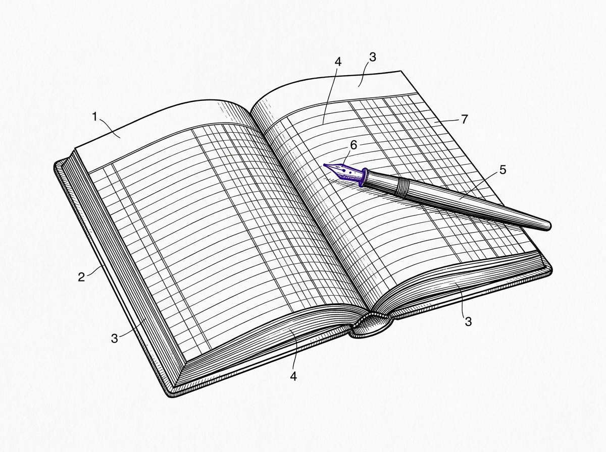

Research journal
Notebook
Dated entries, most recent first. Written for the record, not for an audience. Notes, findings, and failures as they happened.

FIG. RENTRY DATES, DRAWN FROM THIS PAGE'S RECORD
Category
Tags